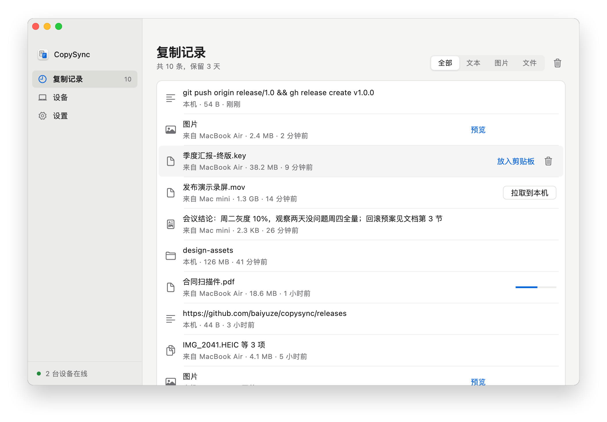

在这台 Mac 复制，
到那台 Mac 粘贴。
文本、图片、文件、整个文件夹都可以。不要求同一个 Apple ID，也不要求在同一个网络。数据在你的设备之间直接传输，经过你自己的服务器时也是加密的。
所有设备上复制过的，都在这里
复制记录保留最近 3 天的内容，随时可以放回剪贴板。50 MB 以内的文件在你复制的时候就已经传好了，更大的文件需要时点一下再拉取。

为什么不用现有的办法
手边有两台 Mac 的人，每天都要把东西从这台挪到那台：一段文字、一张截图、一个文件。现有的办法都差一点：
- 通用剪贴板要求两台设备登录同一个 Apple ID、离得足够近、蓝牙和 Wi‑Fi 都开着。公司的电脑和自己的电脑很少是同一个 Apple ID，大文件也经常复制到一半就没了。
- 隔空投送每次都要选设备、在另一台上点接收，而且只传文件，不管剪贴板。
- 用聊天软件发给自己要手动下载，图片会被压缩，文件还会留在别人的服务器上。
| CopySync | 通用剪贴板 | 隔空投送 | 聊天软件 | |
|---|---|---|---|---|
| 不同 Apple ID 之间 | 可以 | 不行 | 要对方接收 | 可以 |
| 不在同一个网络（家里和公司） | 可以 | 不行 | 不行 | 可以 |
| 复制后直接粘贴，不用点接收 | 可以 | 可以 | 不行 | 不行 |
| 文件与整个文件夹 | 可以 | 不稳定 | 可以 | 要先打包 |
| 找回之前复制过的内容 | 可以 | 不行 | 不行 | 翻聊天记录 |
| 内容不经过第三方服务器 | 不经过 | 不经过 | 不经过 | 经过 |
工作原理
两台 Mac 之间直接建立加密连接。你的服务器只负责让它们找到彼此，打不通直连的时候再帮忙转发。
一次复制的经过
-
感知
后台服务每隔一小段时间检查剪贴板的变更计数。只看计数和类型不需要授权，也不会弹出系统提示。
-
传输
文本随消息一起发出；50 MB 以内的图片和文件打包成流立即推送；更大的文件只发一条记录，等你需要时再传。
-
粘贴
另一台 Mac 先把内容存到本地，再写入剪贴板。按下 ⌘V 粘贴出来的，就是本地的真实文件。
公司网络也能直连
公司双线、运营商地址池这类网络有多个出口，按目标地址选走哪一个。CopySync 1.0 只知道其中一个出口的地址，在这类网络里只能经服务器中转。1.1 会探测每个出口，把地址都告诉对端。
做了什么
- 共用一个端口。所有连接从同一个本地 UDP 端口收发。之前每问一台 STUN 服务器就开一个新端口，问到的地址互相用不上。
- 探测每个出口。在这个端口上同时询问 7 台 IP 分散的服务器，网络有几个出口就拿到几个地址。被 DNS 污染的地址先过滤掉。
- 全部告诉对端。每个出口的地址都发给对端，由它逐个尝试，与实际出口吻合的那一个能打通。
- 记住见过的出口。某次漏掉的出口如果不改端口，就用「出口 IP + 本地端口」推算补上。
- 先中转，再换直连。对端刚启动时，出口地址可能晚到一步，第一次握手落到了中转。之后会在空闲时再打一次洞，打通就换成直连。
一个真实的公司网络
| 出口 | 公网端口 |
|---|---|
| 出口 A | 不变 |
| 出口 B | 不变 |
| 出口 C | 改写，但对不同目标相同 |
| 出口 D | 改写 |
改造前，这台 Mac 与家里的 Mac 只能中转，速度被服务器带宽限制在 0.6 MB/s。改造后直连，连上服务器后约 3 秒建立。
用真实的网络拓扑验证
NAT 打洞实验室用 Linux 网络命名空间与 iptables 搭出下面 9 种拓扑，用 CopySync 真实的连接代码各跑一遍。每次提交代码都会自动运行。
| 场景 | 结果 |
|---|---|
| 单出口 ↔ 家用路由器 | 直连 |
| 两个出口，旧版本（对照） | 中转 |
| 两个出口 ↔ 家用路由器 | 直连 |
| 四个出口 ↔ 家用路由器 | 直连 |
| 两个出口，第二条没探测到，没有历史 | 中转 |
| 两个出口，第二条没探测到，有历史 | 直连 |
| 两个出口 ↔ 两个出口 | 直连 |
| 两个出口 ↔ 端口随机分配的 NAT | 中转 |
| 一开始打不通，之后网络恢复 | 先中转，随后直连 |
测量过程、设计取舍与踩过的坑见技术方案。
服务器看不到你复制了什么
- 服务器不存账号，也不存内容。设备身份是一把 Ed25519 密钥，设备 ID 由公钥算出，服务器不需要用户表就能验证身份。
- 配对时由你核对安全指纹。两台屏幕会显示同样的两行：双方各自公钥的指纹。服务器有能力替换转发中的公钥，但替换之后两块屏幕上的内容就对不上了，这一步就是防中间人的闸门。
- 之后的每条消息都带签名，服务器无法冒充你的设备。直连通道的证书在握手后还会再核对一次，不一致立即断开。
- 中转也只是转发密文。TURN 转发的是加密后的数据包，中转凭证按设备单独签发，12 小时后过期。
出问题的时候会发生什么
每个人的网络环境都不一样。下面这些情况都考虑过，也都有对应的测试。
- 两台 Mac 打不通直连
- 常见于对称 NAT 和公司防火墙。自动改走你服务器上的 TURN 中转，内容依然加密，设备列表里显示「中转」。
- 公共 STUN 服务器连不上
- 国内访问公共 STUN 时通时断。服务器自带 STUN，客户端优先用它。
- 公司网络有多个出口
- 双线、运营商地址池这类网络按目标地址选出口，只探测一次只会知道其中一个出口的地址。CopySync 在同一个端口上向多台服务器探测，把每个出口的地址都发给对端，由它逐个尝试。
- 先连上了中转
- 中转握手快，有时会抢在直连之前。连上之后，发起连接的一方会在空闲时再打一次洞，打通就换成直连；正在传文件时不打扰。
- 对方睡眠、断网或重启
- 连接悄悄断了也能发现，立即关闭重连。这期间复制的内容会记下来，连上后补发到对方的复制记录里，但不会覆盖对方此刻剪贴板里的内容。
- 服务器断开
- 自动重连，间隔从 1 秒开始翻倍、最长 30 秒，并带随机抖动，避免一群设备同时重连。界面实时显示连接状态。
- 文件太大
- 超过上限的只同步一条记录，需要时再拉取。拉取时源文件已经被删，会明确告诉你，而不是不明不白地失败。
- 粘贴到只认纯文本的地方
- 从网页复制的带格式文字会同时写入 HTML 和纯文本两份，粘贴到哪里都不会冒出标签。
- 还没授权读取剪贴板
- 不去读内容，否则后台进程会卡在一个看不见的系统弹窗上。App 里会提示你去授权，并给出直达按钮。
- 后台服务崩溃
- 由 macOS 的 launchd 自动拉起，10 秒节流，不会疯狂重启。
- 更新了 App，或者把它挪了位置
- 打开 App 时会自动校正登录项，并把后台服务重启到新版本。
安装
每台 Mac 装一个 App，再准备一台两边都能访问到的服务器。两台 Mac 在同一个局域网的话，服务器直接跑在其中一台上就行。
在每台 Mac 上
- 下载 CopySync.dmg，打开后把 CopySync 拖进「应用程序」。
- 从「应用程序」里打开。 第一次会提示「无法验证开发者」：CopySync 还没有经过 Apple 公证。到「系统设置 → 隐私与安全性」，点页面下方的「仍要打开」，只需要这一次。
- 点「启用后台同步」。
- 在「设置」里填入服务器地址
ws://服务器地址:8787/signal，按回车。 - 系统询问是否允许读取剪贴板时，选择允许。
- 一台点「设备 → 添加设备」生成 6 位配对码，另一台输入它；两块屏幕上的两行安全指纹完全一致后确认。
在服务器上
任意 Linux，需要 root。ARM 服务器把 amd64 换成 arm64。
curl -LO https://github.com/baiyuze/copysync/releases/latest/download/copysync-server-linux-amd64.tar.gz
tar xzf copysync-server-linux-amd64.tar.gz
cd copysync-server-linux-amd64
sudo ./install.sh 你的公网IP脚本会注册开机自启的 systemd 服务，最后打印出 App 里要填的地址。防火墙或云安全组需要放行：
| 端口 | 用途 |
|---|---|
| 8787/tcp | 信令 |
| 3478/udp | STUN 与 TURN |
| 32768–60999/udp | 中转端口，由系统随机分配 |
也可以用 Docker 部署，见服务器部署说明。
技术规格
| 版本 | 1.1.1，发布 |
|---|---|
| Mac 客户端 | macOS 13 Ventura 及以上；Intel 与 Apple 芯片通用，不需要 Rosetta；安装包 45 MB |
| 服务器 | Linux x86_64 或 ARM64（systemd 或 Docker），也可以运行在 macOS 上；约 15 MB 内存 |
| 同步的内容 | 纯文本、带格式的文本、图片与截图、文件、文件夹，可以按类型关闭 |
| 传输 | WebRTC 数据通道，直连优先，打不通时经 TURN 中转；多出口网络逐个探测每个出口；文件以 tar + zstd 流式打包 |
| 加密与身份 | DTLS 端到端加密；设备身份为 Ed25519 密钥；信令消息逐条签名 |
| 配对 | 6 位配对码，5 分钟内有效，字符集去掉了 0/O、1/I 等易混字符；配对时人工核对安全指纹 |
| 自动同步上限 | 默认 50 MB，可在 1 MB 到 1 GB 之间调整 |
| 记录保留 | 默认 3 天，可在 1 小时到 30 天之间调整，到期自动清理 |
| 实测速度 | 局域网直连传输 20 MB 文件约 330 毫秒，校验和一致 |
| 技术栈 | 后台服务与服务器用 Go，界面用 Flutter，消息定义用 Protocol Buffers |
| 许可 | MIT 开源 |
常见问题
和 macOS 自带的「通用剪贴板」有什么区别？
通用剪贴板要求两台设备登录同一个 Apple ID、开着蓝牙和 Wi‑Fi，并且离得近。CopySync 只要求两台 Mac 都能连上你部署的服务器：不同 Apple ID、一台在家一台在公司，都可以。另外它有复制记录，大文件也可以按需拉取。
如果你的两台 Mac 是同一个 Apple ID、总在一起、主要复制文字，系统自带的已经够用了。
服务器会看到我复制的内容吗？
不会。直连时数据根本不经过服务器；需要中转时，服务器转发的是 DTLS 加密后的数据包。服务器不存账号，也不存任何复制内容。代码是开源的，可以自己核对。
公司网络（双线、多出口）能直连吗？
能。这类网络按目标地址选出口，CopySync 会在同一个端口上向多台服务器探测，拿到每个出口的地址一并发给对端，对端逐个尝试，总有一个对得上。实测公司 4 个出口与家用宽带之间可以直连。对端是端口随机分配的 NAT 时仍会走中转。
必须自己准备服务器吗？
是的，CopySync 不提供公共服务器，这样就不会有任何人的数据经过别人的机器。两台 Mac 在同一个局域网时，在其中一台上运行服务器即可；跨网络使用需要一台有公网 IP 的服务器，最低配置的云主机就够。
支持 Windows 和 iPhone 吗？
Windows 版在计划中。iPhone 和 iPad 暂不支持：iOS 不允许 App 在后台监听剪贴板，做不到 Mac 上那种复制后立即同步的体验。
为什么第一次打开提示「无法验证开发者」？
CopySync 还没有经过 Apple 公证，公证需要每年付费的开发者账号。到「系统设置 → 隐私与安全性」，点页面下方的「仍要打开」即可，只需要这一次。也可以从源码自己构建。
大文件怎么处理？
默认 50 MB 以内的内容在你复制时就推送到另一台 Mac，那边可以直接粘贴；更大的文件只同步一条记录，需要时在复制记录里点「拉取到本机」再传。上限可以在设置里调整。
收费吗？
免费。CopySync 以 MIT 许可开源，源码在 GitHub 上。